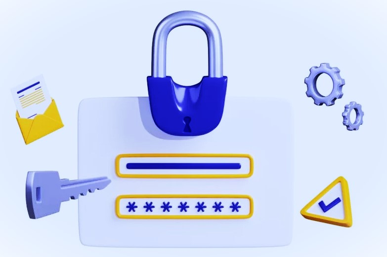
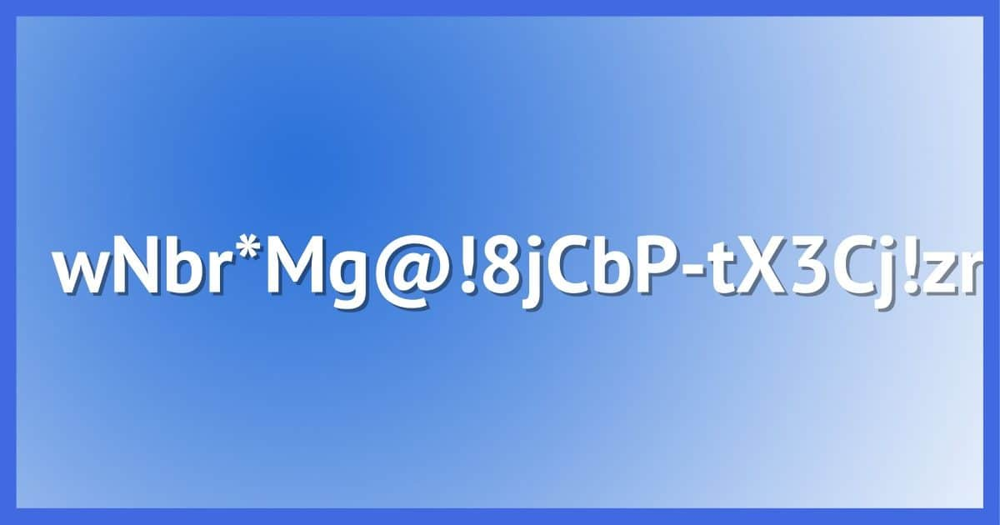
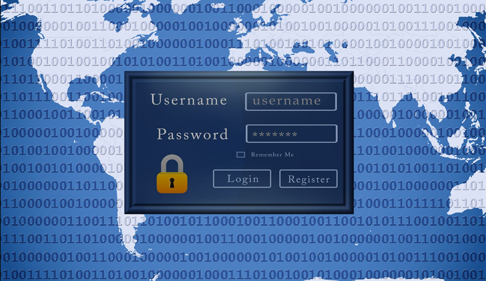
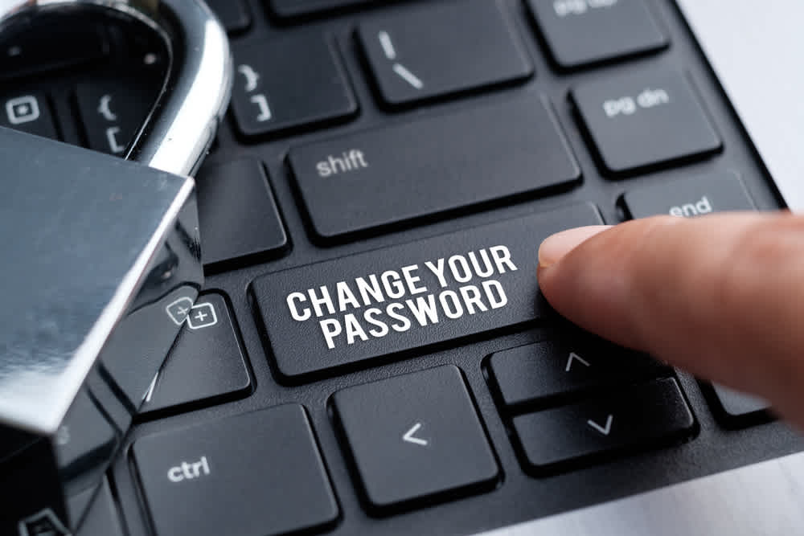

Passwords are a fundamental security mechanism for protecting sensitive information and preventing unauthorized access. However, weak or easily guessable passwords can be vulnerable to attacks. It's essential to use strong passwords that are unique for each online account and follow good password practices, such as avoiding common words, including a mix of uppercase and lowercase letters, numbers, and special characters.
To enhance security further, many websites and services have adopted additional authentication measures, such as two-factor authentication (2FA) or multi-factor authentication (MFA). These methods require users to provide not only their password but also a second form of identification, such as a one-time code sent to their mobile device or a fingerprint scan, making it more challenging for unauthorized individuals to access an account even if they have obtained the password.
A secure password is crucial for protecting online accounts. To ensure security, make sure to follow these practices when creating and managing your passwords:

Length
Aim for a minimum of 12 characters.

Complexity
Use a mix of uppercase and lowercase letters, numbers, and special symbols.

Unique passwords
Use a different password for each account. Avoid common words, phrases,
and easily obtainable information, as well as keyboard patterns or sequential characters.

Regular updates
Change passwords regularly, especially for critical accounts.
Xtra security
Enable two-factor authentication (2FA) or multi-factor authentication (MFA).
Passwords are a critical defense against unauthorized access, but they are vulnerable when weak or predictable. To enhance security, use strong and unique passwords for each account, avoiding common words and incorporating a mix of characters. Additionally, consider adding extra layers of protection like two-factor authentication (2FA) and multi-factor authentication (MFA). A longer password (at least 12 characters) and complexity (mix of uppercase, lowercase, numbers, and symbols) are essential. Avoid common words, phrases, and patterns, and regularly update passwords for important accounts. 2FA and MFA further strengthen your digital security.